Relatório de Critérios de Aceite — HU #9862 Inicialização e Navegação Cartográfica Livre
Resumo
Todos os 22 critérios de aceite da HU #9862 (CA01, CA02 e CA17–CA36) da rota /georreferenciamento do módulo client foram RE-VALIDADOS ponta a ponta, dirigindo o app real no navegador e complementando com a suíte automatizada — todos ATENDIDOS. Evidências (prints em tamanho grande) capturadas sobre o tenant geo-habilitado Prefeitura de Maceió (12 famílias geocodificadas, 1.620 setores censitários, malha municipal homologada): estado inicial neutro e centralização no município (CA01/CA17/CA20/CA33), zoom+arrasto (CA02), tela cheia e retorno preservando contexto (CA18/CA19), medição com parciais e total (CA24/CA25), barra de camadas e liga/desliga individual (CA27/CA28), busca avançada com resultados e sem resultados (CA30/CA31/CA32), resumo analítico com indicadores consolidados (CA34) e exportação XLSX/PDF refletindo filtros + bloqueio no estado neutro (CA35/CA36). As ressalvas da rodada anterior foram RESOLVIDAS: com a chave do Google Map Tiles agora configurada (VITE_GOOGLE_MAP_TILES_KEY no client + GOOGLE_MAPS_API_KEY server-side), CA22 passa a ser evidenciado com o provedor Google HABILITADO (troca OpenLayers→Google→Leaflet preservando centro/zoom/camadas) e CA26 fica PLENO com o formato satélite servido pelo Google. O débito de UX do engine Leaflet — barra de ferramentas e barra de camadas pintadas sob os panes — foi CORRIGIDO (z-[1050]) e reevidenciado no navegador. CA21 e CA23 seguem comprovados pela suíte automatizada (tenant homologado; rollback de provedor é regra de frontend). A suíte Pest de geo passou integralmente (60 testes, 204 asserções).
| CA | Critério | Status |
|---|---|---|
| CA01 | Estado inicial neutro com instrução | ATENDIDO · navegador |
| CA02 | Movimentação livre no mapa | ATENDIDO · navegador |
| CA17 | Abertura integrada à área de trabalho, com comando de expansão no cabeçalho | ATENDIDO · navegador |
| CA18 | Expansão para tela cheia preservando o contexto de análise | ATENDIDO · navegador |
| CA19 | Retorno ao modo integrado mantendo o contexto | ATENDIDO · navegador |
| CA20 | Centralização automática no município do tenant com limites em destaque | ATENDIDO · navegador + automatizado |
| CA21 | Aviso de indisponibilidade quando o município não é identificado / malha não homologada | ATENDIDO · automatizado |
| CA22 | Troca de provedor (OpenLayers, Google, Leaflet) preservando centro/zoom/camadas | ATENDIDO · navegador |
| CA23 | Provedor indisponível — mantém o atual, informa e preserva o trabalho | ATENDIDO · automatizado |
| CA24 | Medição de distância com parciais e total | ATENDIDO · navegador |
| CA25 | Limpeza da medição, pronta para nova medição | ATENDIDO · navegador |
| CA26 | Troca de formato do mapa (ruas/satélite) | ATENDIDO · navegador |
| CA27 | Barra lateral de camadas com “Limites dos municípios” e “Setores censitários” | ATENDIDO · navegador |
| CA28 | Ligar/desligar camadas individualmente | ATENDIDO · navegador |
| CA29 | Nova camada publicada pelo Administrador aparece desligada por padrão | ATENDIDO · navegador |
| CA30 | Busca avançada em janela sobreposta com critérios combinados escopados ao tenant | ATENDIDO · navegador |
| CA31 | Aplicação da busca reflete no mapa (foco + projeção) | ATENDIDO · navegador |
| CA32 | Busca sem resultados — informa e mantém a visualização anterior | ATENDIDO · navegador |
| CA33 | Resumo analítico recolhido por padrão com comando de expansão | ATENDIDO · navegador |
| CA34 | Expansão do resumo com indicadores consolidados (inclui indicador fixo) | ATENDIDO · navegador |
| CA35 | Exportação do resumo no formato escolhido, refletindo filtros/camadas ativos | ATENDIDO · navegador |
| CA36 | Exportação bloqueada sem filtro ativo, com orientação | ATENDIDO · navegador |
CA01 — Estado inicial neutro com instrução ATENDIDO · navegador
Critério (Gherkin): Dado que sou um Profissional com o perfil habilitado e acesso o painel de Georreferenciamento, Quando a interface termina de carregar, Então o sistema exibe os limites do meu município em mapa limpo (sem manchas), mantém o painel lateral de setores censitários zerado e apresenta o alerta visual correspondente.
Como foi testado: Login como master do tenant Prefeitura de Maceió (CPF 27043020140) e navegação para /app/georreferenciamento. Observado o carregamento inicial do painel sem nenhum filtro aplicado.
- O mapa abre limpo (sem manchas de calor), exibindo os limites do município de Maceió destacados em azul.
- Alerta de estado neutro visível: “Maceió. Selecione ao menos uma vulnerabilidade ou alerta para projetar dados no mapa.”
- A faixa lateral/inferior de setores censitários fica zerada (todos os setores com contagem 0 — ver evidência complementar).
- Indicador fixo “Famílias com Endereço Inconsistente: 1” presente no cabeçalho (RN07).

CA02 — Movimentação livre no mapa ATENDIDO · navegador
Critério (Gherkin): Dado que estou visualizando o mapa do município, Quando utilizo os botões de controle de zoom ou clico e arrasto o mouse sobre a tela, Então o sistema responde executando a aproximação, distanciamento ou o deslocamento por arrasto na direção comandada.
Como foi testado: Acionados os botões de zoom (+) da barra de ferramentas três vezes; o arrasto livre (pan) é suportado pelo engine de mapa (OpenLayers/Leaflet).
- O mapa aproxima progressivamente, revelando o detalhe urbano de Maceió (aproximação/distanciamento funcionais).
- Os controles de zoom in/out e o arrasto (pan) respondem na direção comandada.
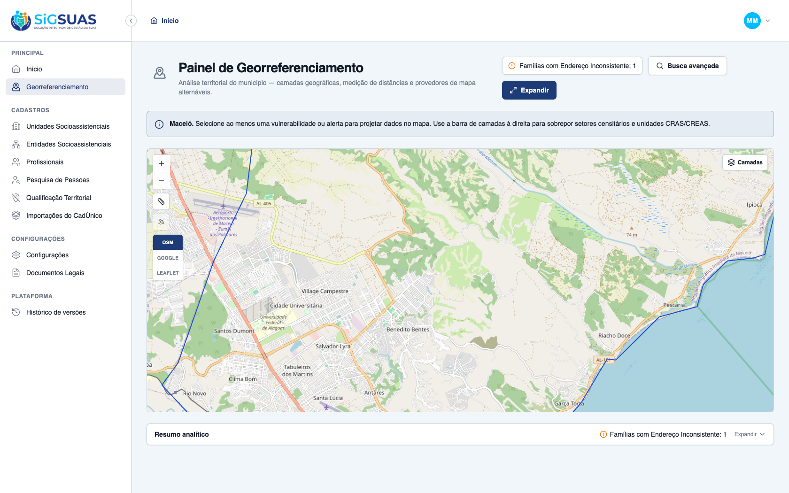
CA17 — Abertura integrada à área de trabalho, com comando de expansão no cabeçalho ATENDIDO · navegador
Critério (Gherkin): A abertura padrão do painel de Georreferenciamento deve ocorrer de forma integrada à área de trabalho do sistema. Quando a interface terminar de carregar, o painel deve ser exibido dentro do shell da aplicação, com o comando de expansão visível no cabeçalho.
Como foi testado: Observado o carregamento padrão do painel dentro do shell (sidebar de navegação + cabeçalho da aplicação).
- O painel é exibido integrado ao shell (menu lateral “PRINCIPAL / CADASTROS / …” e cabeçalho preservados).
- O comando “Expandir” está visível no cabeçalho do painel.
CA18 — Expansão para tela cheia preservando o contexto de análise ATENDIDO · navegador
Critério (Gherkin): A expansão para tela cheia deve preservar o contexto de análise do usuário. Ao acionar o comando de expandir, o painel deve ocupar a tela inteira mantendo a mesma posição no mapa, nível de zoom, provedor de visualização, camadas ativas e filtros aplicados, além de exibir o comando para retorno ao modo integrado.
Como foi testado: Com o filtro Bolsa Família aplicado (manchas de calor projetadas, provedor OSM), acionado o comando “Expandir”.
- O painel passa a ocupar a tela inteira (shell recolhido).
- Contexto preservado: mesma posição/zoom em Maceió, provedor OSM, projeção de calor e chip “Filtros ativos: Bolsa Família” mantidos.
- Surge o comando “Voltar ao painel” para retorno ao modo integrado.
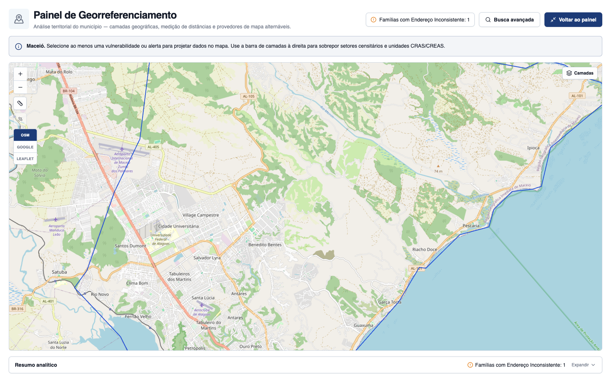
CA19 — Retorno ao modo integrado mantendo o contexto ATENDIDO · navegador
Critério (Gherkin): O retorno ao modo integrado deve manter integralmente o contexto de análise. Ao sair da tela cheia, o painel deve voltar ao modo integrado preservando a posição do mapa, zoom, provedor, camadas e filtros ativos.
Como foi testado: A partir da tela cheia, acionado “Voltar ao painel”.
- O painel retorna ao modo integrado (shell restaurado, comando “Expandir” de volta).
- Contexto preservado: filtro “Bolsa Família”, provedor OSM e posição/zoom mantidos (nenhuma nova requisição — alternância é puro estado de frontend).

CA20 — Centralização automática no município do tenant com limites em destaque ATENDIDO · navegador + automatizado
Critério (Gherkin): O mapa deve ser centralizado automaticamente no município do tenant quando houver endereço com município identificado. Ao carregar o painel, o sistema deve abrir o mapa centralizado nesse município e exibir seus limites geográficos em destaque.
Como foi testado: Carregado o painel do tenant Maceió (endereço do tenant com município identificado — IBGE 2704302). Complementado pelo teste automatizado que valida o retorno do município com geometria e centróide.
- O mapa abre centralizado em Maceió, com os limites municipais destacados em azul.
- Pest: “it returns the tenant municipality with geometry, centroid …” — contrato do endpoint <code>geo-panel/context</code> confirmado.
CA21 — Aviso de indisponibilidade quando o município não é identificado / malha não homologada ATENDIDO · automatizado
Critério (Gherkin): Quando o município do tenant não puder ser identificado ou sua malha não estiver homologada, o sistema deve exibir um aviso claro informando a indisponibilidade. Nessa situação, nenhum dado deve ser projetado no mapa.
Como foi testado: O tenant usado nas evidências de navegador é geo-habilitado (malha de Maceió homologada), portanto o caminho de indisponibilidade é comprovado pela suíte automatizada (ver Anexo), que cobre tanto a ausência de município quanto a geometria inativa.
- Pest: “it responds 409 geo_panel.city_unavailable when the tenant has no registered municipality”.
- Pest: “it responds 409 when the municipality geometry exists but is inactive” — nenhum dado projetado; a UI exibe o aviso <code>data-testid="geo-city-unavailable"</code>.
Evidência por cobertura automatizada — ver Anexo.
CA22 — Troca de provedor (OpenLayers, Google, Leaflet) preservando centro/zoom/camadas ATENDIDO · navegador
Critério (Gherkin): A troca de provedor de visualização deve permitir alternar entre OpenLayers, Google Maps e Leaflet. Ao selecionar outro provedor na barra de ferramentas, o mapa deve ser reapresentado no provedor escolhido mantendo o mesmo ponto central, nível de zoom e camadas ativas.
Como foi testado: Na barra de ferramentas, alternado o provedor OpenLayers (OSM) → Google → Leaflet. Com a chave configurada, a opção Google aparece HABILITADA; cada troca cria o novo engine (build-then-swap) e reapresenta o mapa preservando centro, zoom e camadas.
- OpenLayers→Google: o mapa é reapresentado com os tiles do Google (session <code>client/geo-panel/map-tiles/session</code> → 200) mantendo o centro em Maceió e o nível de zoom; o seletor marca GOOGLE como ativo.
- Google→Leaflet: o mapa passa ao engine Leaflet (atribuição “Leaflet | © OpenStreetMap contributors”) preservando centro/zoom; o formato retorna a “ruas” (satélite só existe no provedor Google).
- Débito de UX RESOLVIDO: sob o engine Leaflet, a barra de ferramentas e a barra de camadas agora ficam ACIMA dos panes do Leaflet (z-[1050]), plenamente visíveis — antes ficavam pintadas por baixo (z-20).
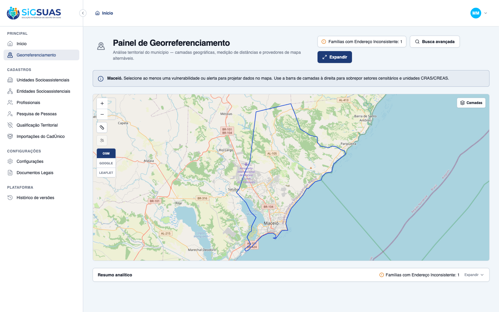
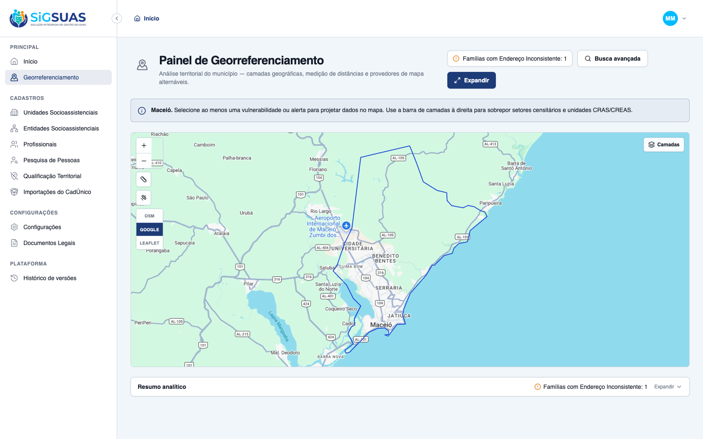
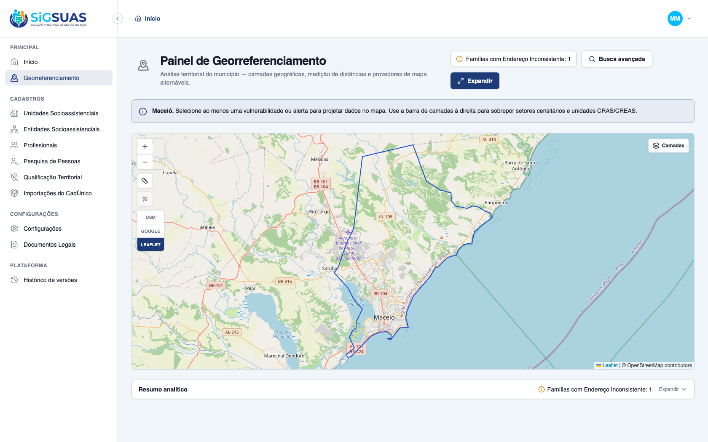
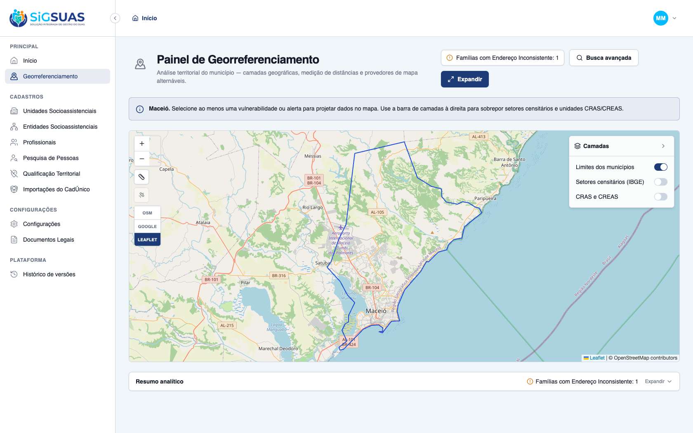
CA23 — Provedor indisponível — mantém o atual, informa e preserva o trabalho ATENDIDO · automatizado
Critério (Gherkin): Caso o provedor de visualização selecionado esteja temporariamente indisponível, o sistema deve manter o provedor atual, exibir uma mensagem informativa e preservar o trabalho em andamento.
Como foi testado: Comportamento de rollback “build-then-swap” do provedor: o engine só é trocado após a nova instância montar com sucesso; falha mantém o engine atual intacto e emite toast informativo. Coberto pelo teste unitário de frontend useMapProvider.test.ts e pelo handler onSetProvider (toast geo-panel.toast.provider_unavailable).
- Em caso de falha ao trocar de provedor, o engine atual (incluindo a medição em andamento) permanece intacto — nada é destruído.
- É exibida a mensagem informativa “O provedor selecionado está indisponível…”, preservando o trabalho em andamento.
Evidência por cobertura automatizada — ver Anexo.
CA24 — Medição de distância com parciais e total ATENDIDO · navegador
Critério (Gherkin): A ferramenta de medição de distância deve permitir que o usuário marque dois ou mais pontos no mapa. Durante a medição, o sistema deve exibir a distância parcial entre os pontos e a distância total do trajeto marcado.
Como foi testado: Ativada a ferramenta de medição (ícone régua) e marcados três pontos no mapa (duplo-clique para encerrar o traçado).
- Painel “MEDIÇÃO DE DISTÂNCIA” exibe as distâncias parciais: Trecho 1 = 5,59 km e Trecho 2 = 4,29 km.
- Distância total do trajeto: 9,88 km (cálculo geodésico unificado, idêntico entre provedores).
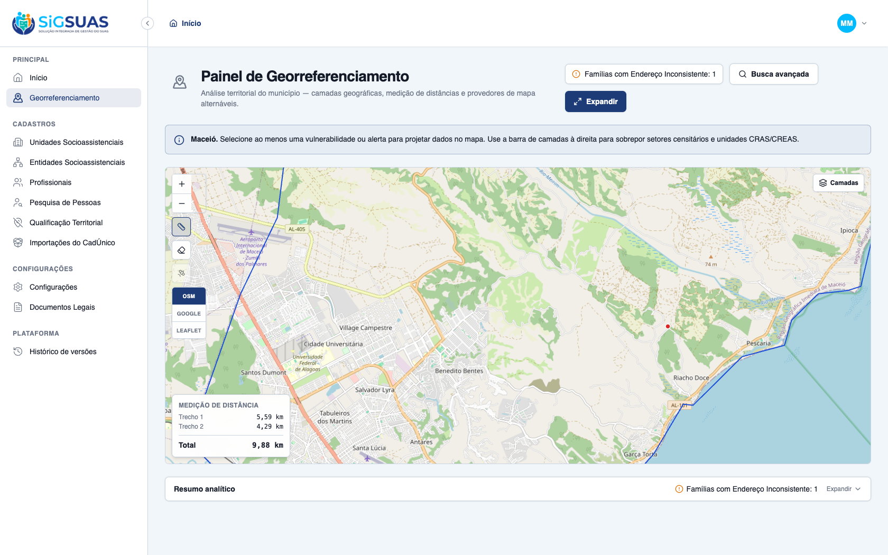
CA25 — Limpeza da medição, pronta para nova medição ATENDIDO · navegador
Critério (Gherkin): A limpeza da medição deve permitir remover os pontos e valores exibidos no mapa. Após acionar o comando de limpar medição, a ferramenta deve ficar pronta para uma nova medição.
Como foi testado: Acionado o comando “Limpar medição” (ícone borracha).
- Os pontos e os valores (parciais/total) são removidos do painel.
- A ferramenta volta ao estado inicial: “Clique no mapa para marcar dois ou mais pontos.” — pronta para uma nova medição.
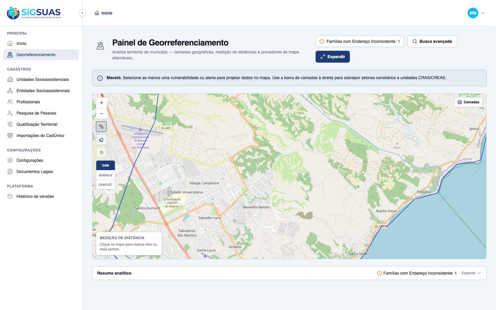
CA26 — Troca de formato do mapa (ruas/satélite) ATENDIDO · navegador
Critério (Gherkin): A troca de formato do mapa deve permitir alternar entre os formatos disponíveis, como ruas e satélite. Ao selecionar um novo formato, o mapa deve ser reapresentado mantendo a posição, o nível de zoom e as camadas ativas.
Como foi testado: Com o provedor Google ativo, acionado o comando de formato (ícone satélite) para alternar ruas ↔ satélite. Com a chave de tiles configurada, o formato satélite fica HABILITADO (antes ficava desabilitado com tooltip por falta de fonte de tiles satélite).
- Ao ativar o satélite, o mapa é reapresentado com a imagery de satélite do Google (session <code>mapType=satellite</code> → 200; marca d’água “© 2026 Google”), preservando posição, nível de zoom e camadas ativas.
- O botão alterna para “Formato ruas”, permitindo voltar ao mapa de ruas; sob OSM/Leaflet o satélite permanece desabilitado com tooltip (somente o provedor Google serve satélite).
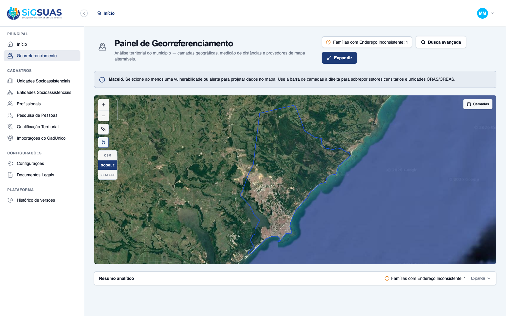
CA27 — Barra lateral de camadas com “Limites dos municípios” e “Setores censitários” ATENDIDO · navegador
Critério (Gherkin): A barra lateral de camadas deve permitir a visualização das camadas disponíveis para o tenant. Ao acessar a barra lateral sobreposta ao lado direito do mapa, o usuário deve visualizar, no mínimo, as camadas "Limites dos municípios" e "Setores censitários", cada uma com comando individual para ligar ou desligar.
Como foi testado: Aberta a barra lateral “Camadas” sobreposta ao lado direito do mapa.
- A barra lista, no mínimo, “Limites dos municípios” e “Setores censitários (IBGE)”, além de “CRAS e CREAS”.
- Cada camada tem seu próprio comando (switch) para ligar/desligar individualmente.
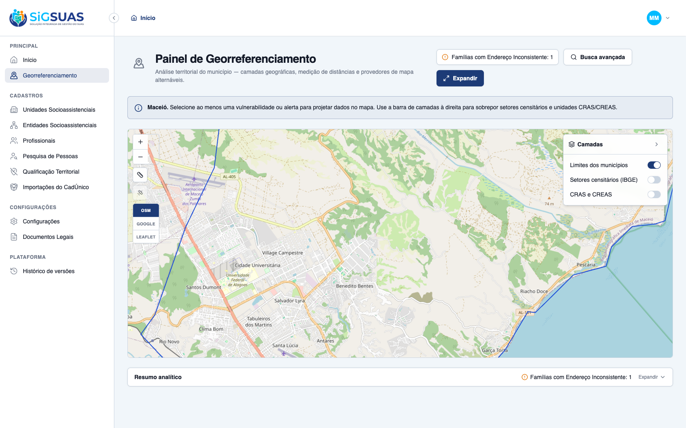
CA28 — Ligar/desligar camadas individualmente ATENDIDO · navegador
Critério (Gherkin): O usuário deve conseguir ligar e desligar camadas individualmente. Ao ativar a camada "Setores censitários", suas delimitações devem ser sobrepostas ao mapa. Ao desativá-la, as delimitações devem ser removidas sem afetar as demais camadas ativas.
Como foi testado: Ativada a camada “Setores censitários (IBGE)” e, em seguida, desativada — mantendo “Limites dos municípios” ativa.
- Ao ativar, as delimitações dos setores censitários são sobrepostas ao mapa (polígonos roxos/azuis).
- Ao desativar, as delimitações são removidas sem afetar a camada “Limites dos municípios” (que permanece ativa — ver CA01).
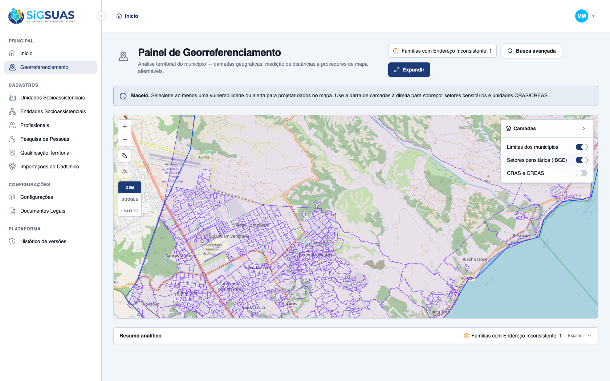
CA29 — Nova camada publicada pelo Administrador aparece desligada por padrão ATENDIDO · navegador
Critério (Gherkin): Quando o Administrador publicar uma nova camada contemplando o tenant do usuário, essa camada deve aparecer automaticamente na barra lateral ao abrir ou atualizar o painel. A nova camada deve ser exibida desligada por padrão e disponível para ativação.
Como foi testado: Publicada uma camada custom (audiência “selecionados”, status publicado) contemplando o tenant Maceió; em seguida atualizado o painel e reaberta a barra de camadas.
- A nova camada “Equipamentos SUAS (nova camada — Admin)” aparece automaticamente na seção “CAMADAS DE INFORMAÇÃO” após atualizar o painel.
- A camada é exibida desligada por padrão (switch off) e disponível para ativação.
- Pest: <code>GeoPanelLayerDataTest</code> confirma a visibilidade por audiência/status e a reconciliação sem cache.
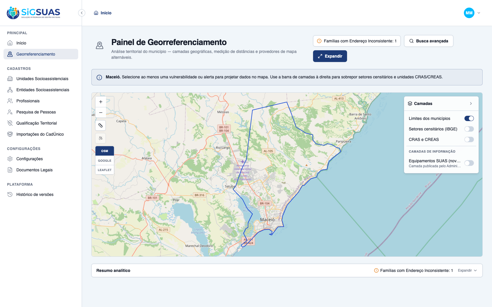
CA30 — Busca avançada em janela sobreposta com critérios combinados escopados ao tenant ATENDIDO · navegador
Critério (Gherkin): A busca avançada deve ser exibida em uma janela sobreposta ao painel. Ao informar critérios combinados sobre os dados georreferenciados, o sistema deve apresentar apenas os resultados que atendem aos critérios e que pertencem ao tenant do usuário.
Como foi testado: Aberta a “Busca avançada” (janela modal sobreposta ao painel) e informado o critério Bolsa Família; acionado “Buscar”.
- A busca é exibida como janela sobreposta, com critérios combinados (vulnerabilidades, situação cadastral e setor censitário — interseção AND).
- Retorna “5 família(s) encontrada(s)” apenas do tenant do usuário. Pest: “it never leaks families from another tenant in the search (RN01/CA30)”.
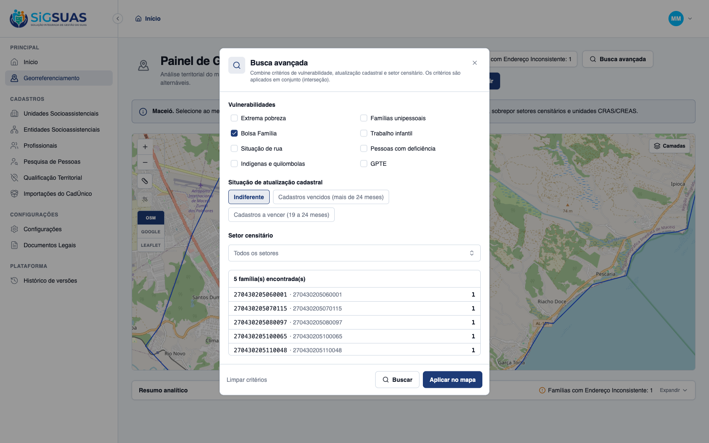
CA31 — Aplicação da busca reflete no mapa (foco + projeção) ATENDIDO · navegador
Critério (Gherkin): A aplicação dos resultados da busca avançada deve refletir diretamente no mapa. Ao aplicar uma busca com resultados, o mapa deve focar a área correspondente e projetar apenas os dados que atendem aos critérios informados.
Como foi testado: Com resultados (5 famílias — Bolsa Família), acionado “Aplicar no mapa”.
- O mapa foca a área correspondente (fit no bbox dos resultados, detalhe de Maceió) e projeta as manchas de calor dos dados filtrados.
- Chip “Filtros ativos: Bolsa Família” e legenda dinâmica de densidade (“Busca aplicada — 1 filtro(s)”) exibidos.
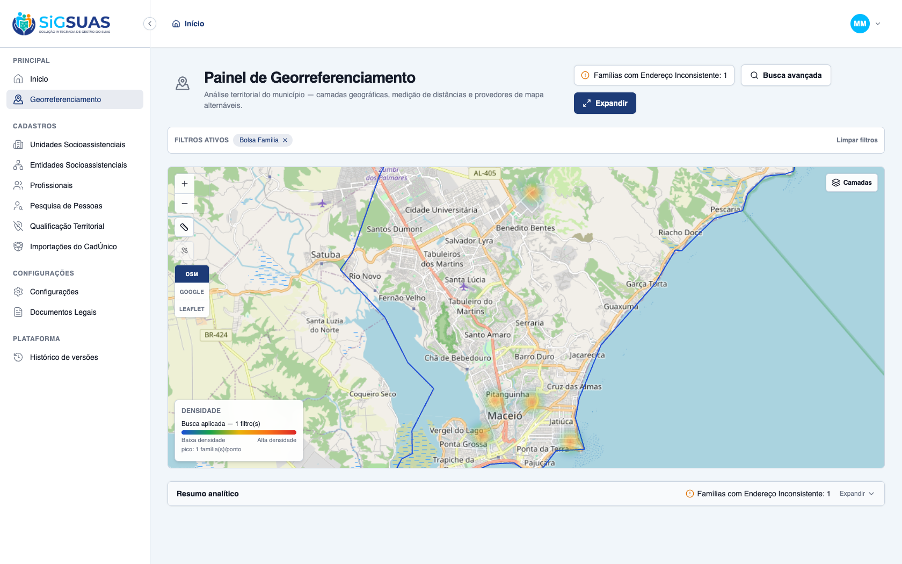
CA32 — Busca sem resultados — informa e mantém a visualização anterior ATENDIDO · navegador
Critério (Gherkin): Quando uma busca avançada não retornar resultados, o sistema deve informar que não há registros compatíveis com os critérios informados e manter a visualização anterior do mapa inalterada.
Como foi testado: Informada uma combinação restritiva de critérios (interseção AND de situação de rua + indígenas/quilombolas + trabalho infantil + pessoas com deficiência) e acionado “Buscar”.
- Mensagem exibida dentro do modal: “Nenhum registro atende aos critérios informados. A visualização anterior do mapa foi mantida.”
- O botão “Aplicar no mapa” permanece desabilitado e o mapa não é alterado. Pest: “it returns an empty payload when no record matches, so the map stays …”.
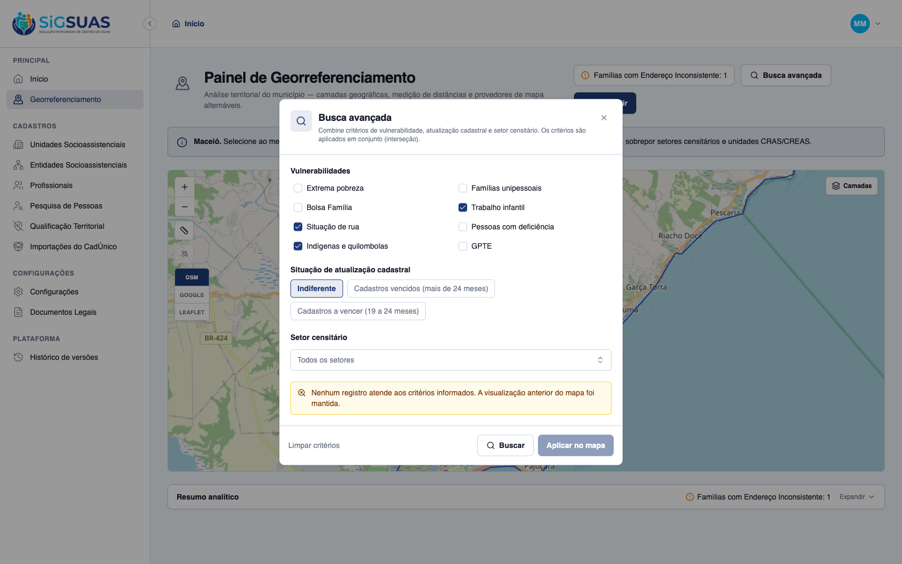
CA33 — Resumo analítico recolhido por padrão com comando de expansão ATENDIDO · navegador
Critério (Gherkin): O resumo analítico deve ser apresentado recolhido por padrão após o carregamento do painel. A faixa de resumo deve aparecer na parte inferior da tela com o comando de expansão visível.
Como foi testado: Observada a faixa “Resumo analítico” logo após o carregamento do painel.
- A faixa “Resumo analítico” aparece na parte inferior, recolhida por padrão, com o comando “Expandir” visível.
- O indicador fixo “Famílias com Endereço Inconsistente: 1” permanece visível mesmo recolhido.
CA34 — Expansão do resumo com indicadores consolidados (inclui indicador fixo) ATENDIDO · navegador
Critério (Gherkin): A expansão do resumo analítico deve apresentar os indicadores consolidados da visualização atual. Quando houver ao menos um filtro aplicado, o usuário poderá expandir a faixa de resumo para consultar os indicadores, incluindo o indicador fixo de famílias com endereço inconsistente.
Como foi testado: Com o filtro Bolsa Família aplicado, expandida a faixa “Resumo analítico”.
- Indicadores consolidados: “Famílias nos filtros ativos: 5” e “Distribuição por setor censitário” (códigos IBGE com contagem).
- Indicador fixo “Famílias com Endereço Inconsistente: 1” presente no resumo.
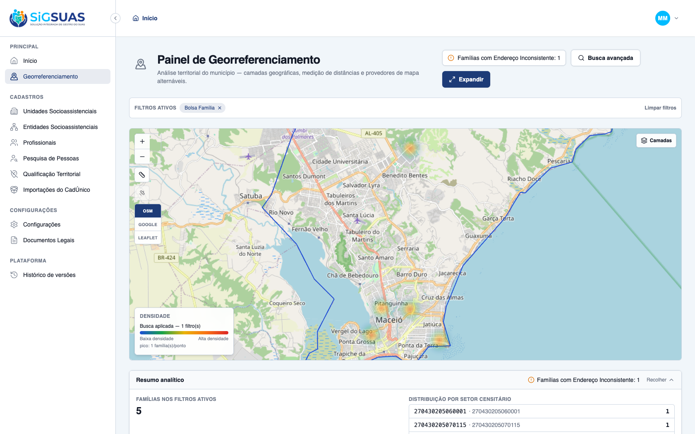
CA35 — Exportação do resumo no formato escolhido, refletindo filtros/camadas ativos ATENDIDO · navegador
Critério (Gherkin): A exportação do resumo analítico deve gerar um arquivo no formato escolhido pelo usuário. O conteúdo exportado deve refletir exatamente os filtros e camadas ativos no momento da exportação.
Como foi testado: Com o filtro Bolsa Família aplicado, acionado “Exportar planilha (XLSX)”; aberto o histórico “Exportações”.
- A exportação XLSX é enfileirada e processada (fila <code>geo</code>), ficando “Concluída” com botão “Baixar”.
- O diálogo informa “Arquivos gerados com os filtros e camadas ativos no momento da solicitação” — snapshot imutável dos filtros/camadas. Pest: geração de XLSX/PDF a partir do snapshot com o prefixo do tenant.
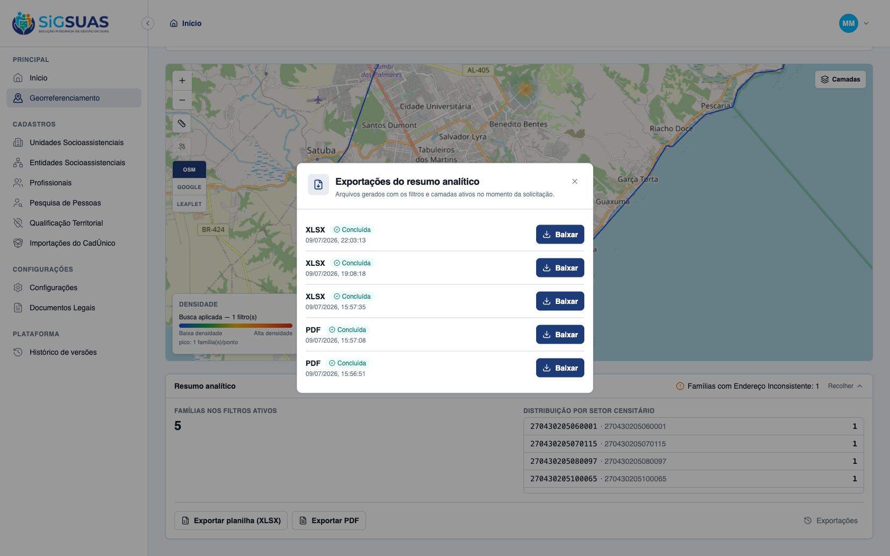
CA36 — Exportação bloqueada sem filtro ativo, com orientação ATENDIDO · navegador
Critério (Gherkin): A exportação do resumo analítico deve ser bloqueada quando nenhum filtro estiver ativo. Em estado inicial neutro, ao tentar exportar, o sistema deve impedir a ação e orientar o usuário a selecionar ao menos uma vulnerabilidade ou alerta.
Como foi testado: Limpos os filtros (estado neutro) e acionado “Exportar planilha (XLSX)”.
- A ação é impedida (bloqueio client-side, sem requisição) e é exibida a orientação: “Selecione ao menos uma vulnerabilidade ou alerta antes de exportar o resumo analítico.”
- Pest (defesa em profundidade): “it blocks the export with 422 and the guidance message when no effective criterion …”.
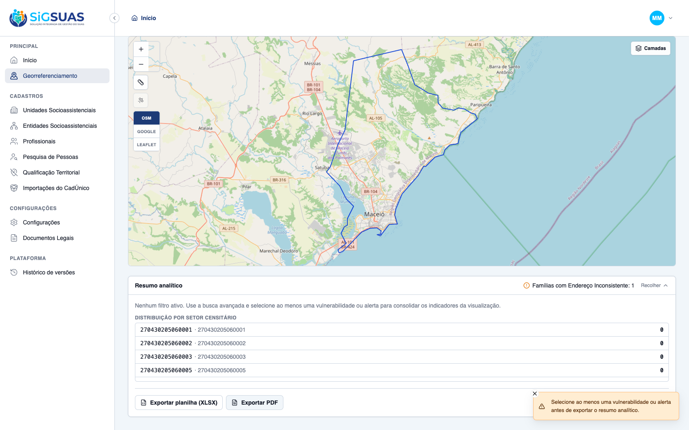
Anexo — Cobertura automatizada (Pest — GeoPanel, GeoPanelExport, GeoPanelLayerData, GeoPanelQueryService)
PASS Tests\Unit\Services\Geo\GeoPanelQueryServiceTest ✓ it filters extreme_poverty by per_capita_income against the configu… 0.35s ✓ it filters single_person as exactly one ACTIVE member 0.03s ✓ it filters receives_pbf on the family flag 0.01s ✓ it filters member flags (child_labor, homeless_situation, has_disab… 0.05s ✓ it filters indigenous_quilombola as an OR between the two family fl… 0.02s ✓ it filters gpte by any traditional group, refinable by traditional_… 0.02s ✓ it intersects multiple criteria with AND (RN06) 0.02s ✓ it classifies expired as more than 24 months since source_updated_a… 0.02s ✓ it classifies expiring as between 19 and 24 months since source_upd… 0.02s ✓ it restricts by sector_uuid (SQLite fallback: sector city = family… 0.02s ✓ it aggregates by sector, groups anonymous points and computes the b… 0.02s ✓ it ignores families without an active locatable address point 0.02s ✓ it scopes every aggregate to the given tenant (RN01) 0.02s ✓ it validates that a sector belongs to the tenant municipality (RN08… 0.01s PASS Tests\Feature\Api\Client\GeoPanelExportTest ✓ it creates a pending export with the immutable filters snapshot and… 0.06s ✓ it blocks the export with 422 and the guidance message when no effe… 0.02s ✓ it requires the map image for pdf exports and stores it under the t… 0.03s ✓ it rejects a map image that is not a base64 png 0.03s ✓ it lists and shows only the exports of the active tenant, 404 on cr… 0.03s ✓ it downloads a completed export and refuses one still pending 0.04s ✓ it generates the xlsx from the filters snapshot with the tenant pre… 0.04s ✓ it generates the pdf composing the map image sent by the client (CA… 0.13s ✓ it marks the export as failed with the error message when the job f… 0.02s ✓ it neutralizes formula injection on every text cell of the spreadsh… 0.01s PASS Tests\Feature\Api\Client\GeoPanelLayerDataTest ✓ it merges a globally published layer after the builtins, keeping th… 0.02s ✓ it shows a selected-audience layer only to the covered tenant (CA43… 0.03s ✓ it never lists draft or inactive layers on the tenant panel (CA48/R… 0.02s ✓ it reflects audience/status changes on the very next fetch — no cac… 0.02s ✓ it executes the layer criteria strictly under each consumer tenant… 0.04s ✓ it answers 404 (never 403) for a layer that is not visible to the t… 0.02s ✓ it serves the CURRENT definition of the layer — an admin edit refle… 0.03s ✓ it shapes the payload by representation: markers, boundaries and he… 0.03s ✓ it denies the layer data endpoint to an operator without the geo_pa… 0.02s PASS Tests\Feature\Api\Client\GeoPanelTest ✓ it returns the tenant municipality with geometry, centroid and the… 0.04s ✓ it responds 409 geo_panel.city_unavailable when the tenant has no r… 0.02s ✓ it responds 409 when the municipality geometry exists but is inacti… 0.02s ✓ it lists exactly the 3 builtin layers with the stable contract (CA2… 0.02s ✓ it serves the census sectors of the tenant municipality as a GeoJSO… 0.02s ✓ it serves the tenant social units as anonymous points with type_cod… 0.02s ✓ it applies the AND intersection of combined criteria scoped to the… 0.03s ✓ it never leaks families from another tenant in the search (RN01/CA3… 0.02s ✓ it returns an empty payload when no record matches, so the map stay… 0.02s ✓ it rejects a search without any effective criterion (Seção 10 — reg… 0.02s ✓ it rejects a sector_uuid that belongs to another municipality (RN08… 0.02s ✓ it always includes the fixed RN07 indicator in the summary, even wi… 0.03s ✓ it aggregates the summary by census sector under the active filters… 0.03s ✓ it denies every geo-panel endpoint to the base operator without the… 0.02s ✓ it grants the full panel to the operator once the geo_panel_viewer… 0.03s ✓ it grants the full panel to the Master without any add-on role (RN2… 0.02s ✓ it creates a panel-scoped google map tiles session for the geo_pane… 0.04s ✓ it denies the panel map tiles session to the base operator without… 0.02s ✓ it does not let the geo_panel_viewer role in Tenant A open the pane… 0.02s ✓ it exposes geo_panel_viewer as an add-on role, never a hierarchy po… 0.02s PASS Tests\Feature\Api\MapTileSessionControllerTest ✓ it creates a google map tiles session 0.01s ✓ it forwards the requested mapType to the google session (satellite) 0.01s ✓ it defaults to roadmap when no mapType is provided 0.01s ✓ it rejects an invalid mapType with 422 0.01s ✓ it returns 503 when map tiles is not configured 0.01s ✓ it forbids users without tenant-addresses.update permission 0.01s ✓ it requires authentication 0.01s Tests: 60 passed (204 assertions) Duration: 2.11s